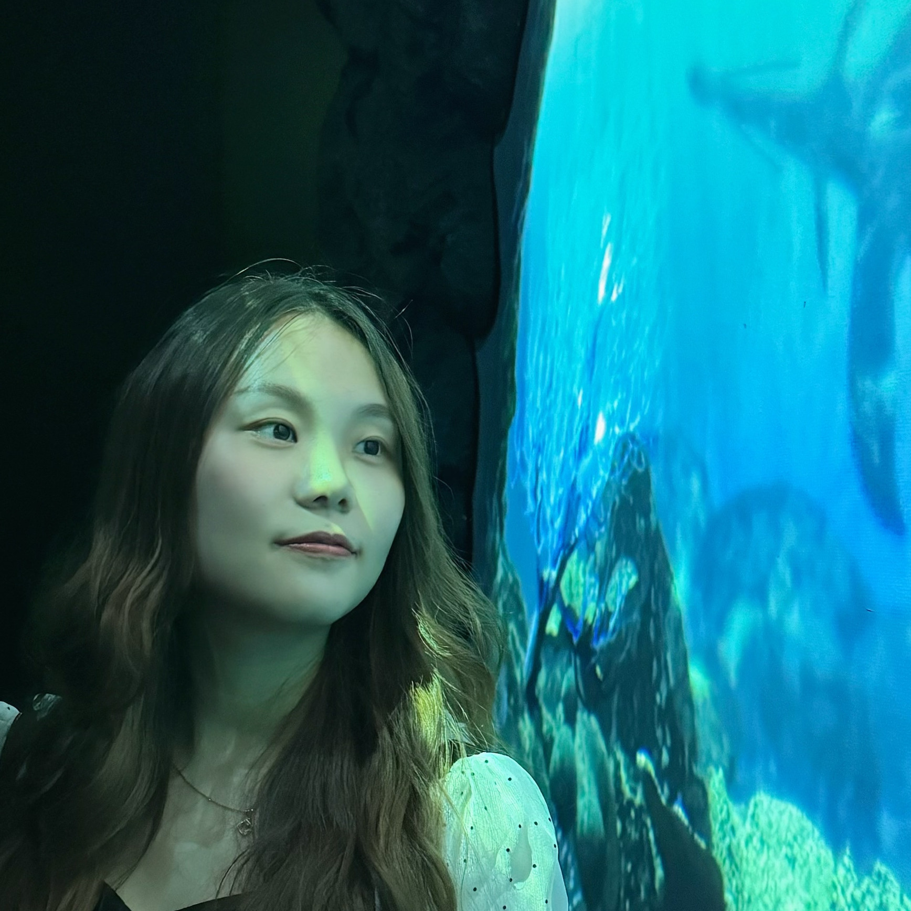
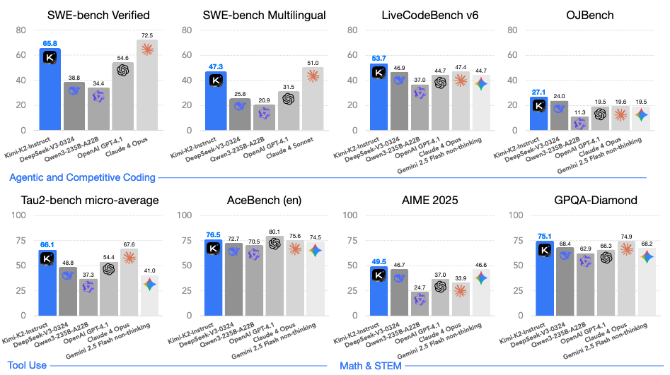
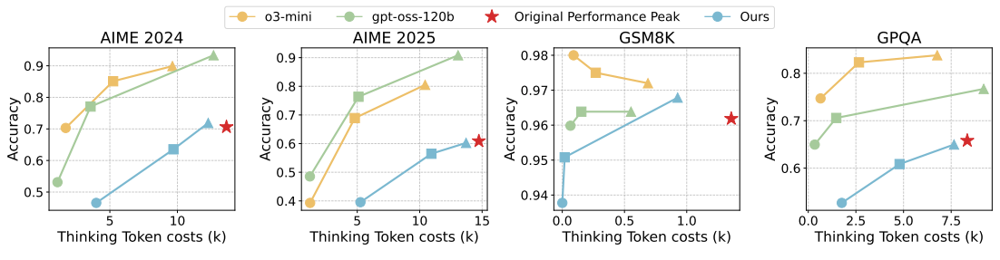
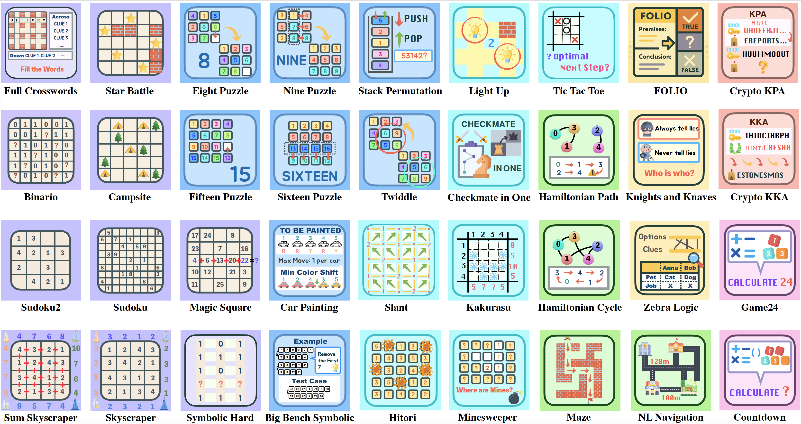

|
Siyu Yuan I'm a fourth-year Ph.D. student at Fudan University. I am advised by Prof. Deqing Yang and Prof. Yanghua Xiao at Knowledge Work Lab. Previously, I received my Bachelor's degree from Fudan University in 2021. I am a recipient of several awards, including China National Scholarship for Doctoral Students (博士生国家奖学金), ACL 2025 Outstanding Paper Award, ACL 2023 Outstanding Paper Award, Outstanding Graduate Student (优秀毕业生) in Shanghai, and Outstanding Student Pacemaker of Fudan University (复旦大学优秀学生标兵). 👀 I am currently on the job market! Actively seeking roles in building agentic intelligence. Open to full-time positions and research collaborations in generative AI. Let's connect! Email / Resume / Google Scholar / Github |
 |
{kind=link}
Research: Planning and Reasoning in Language ModelsI am dedicated to advancing fundamental planning and reasoning capabilities in language models, with a particular focus on building reasoning models and autonomous agents:
|
News
|
Selected PublicationsA full list of publications is here. (* indicates equal contribution.) |
|

|
Kimi K2: Open Agentic Intelligence
Siyu Yuan (co-author), contributed to Tool-Integrated Reasoning for Seed1.5-Thinking Technical Report, 2025. (Huggingface Download: 41k+) Homepage |
|

|
ThinkDial: An Open Recipe for Controlling Reasoning Effort in Large Language Models
Qianyu He*, Siyu Yuan*, Xuefeng Li, Mingxuan Wang, Jiangjie Chen Technical Report, 2025. |
|

|
Enigmata: Scaling Logical Reasoning in Large Language Models with Synthetic Verifiable Puzzles
Jiangjie Chen*, Qianyu He*, Siyu Yuan*, Aili Chen*, Zhicheng Cai, Weinan Dai, Hongli Yu, Qiying Yu, Xuefeng Li, Jiaze Chen, Hao Zhou, Mingxuan Wang NeurIPS (Spotlight), 2025. Core Contributor. Homepage |

|
Seed1.5-Thinking: Advancing Superb Reasoning Models with Reinforcement Learning
Siyu Yuan (co-author), contributed to Logic Reasoning Capabilities for Seed1.5-Thinking Technical Report, 2025. (700+ GitHub Stars) GitHub |

|
Agent-R: Training Language Model Agents to Reflect via Iterative Self-Training
Siyu Yuan*, Zehui Chen*, Zhiheng Xi, Junjie Ye, Zhengyin Du, Jiecao Chen arXiv, 2025. (100+ GitHub Stars, Huggingface Daily Paper Top-1) GitHub |

|
EvoAgent: Towards Automatic Multi-Agent Generation via Evolutionary Algorithms
Siyu Yuan*, Kaitao Song*, Jiangjie Chen, Xu Tan, Dongsheng Li, Deqing Yang NAACL, 2025. (100+ GitHub Stars) Homepage / GitHub |

|
EASYTOOL: Enhancing LLM-based Agents with Concise Tool Instruction
Siyu Yuan*, Kaitao Song*, Jiangjie Chen, Xu Tan, Yongliang Shen, Ren Kan, Dongsheng Li, Deqing Yang NAACL, 2025. (23.6k+ GitHub Stars, JARVIS project) GitHub |

|
Distilling Script Knowledge from Large Language Models for Constrained Language Planning
Siyu Yuan, Jiangjie Chen, Ziquan Fu, Xuyang Ge, Soham Shah, Charles Jankowski, Yanghua Xiao, Deqing Yang ACL, 2023. (Outstanding Paper Award) GitHub |
Internship |
|
Selected Awards |
|
| 🐶 🍦 🤖 |